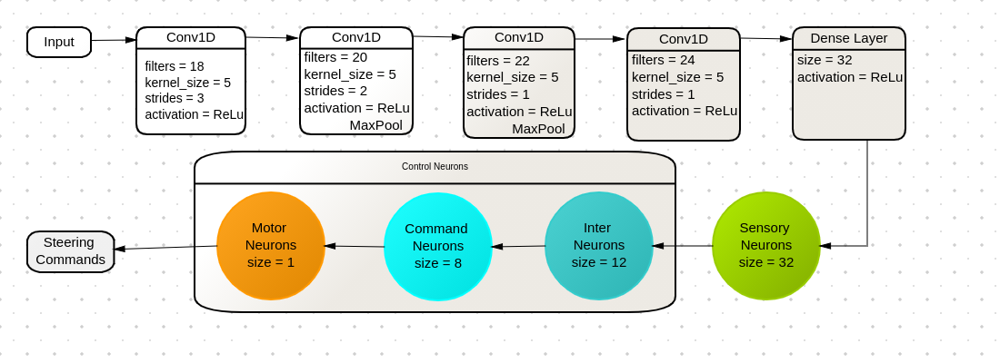
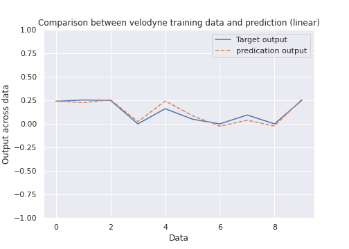
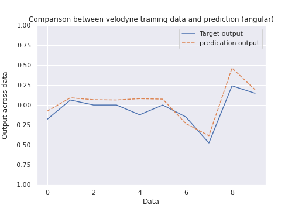
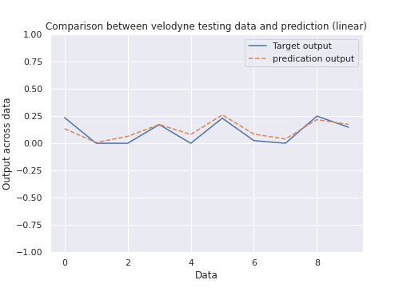
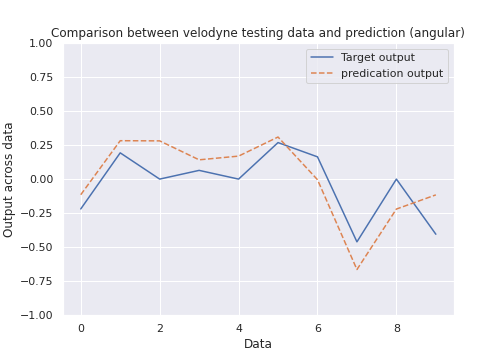
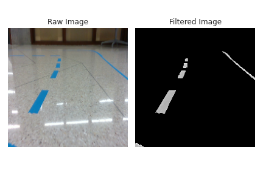
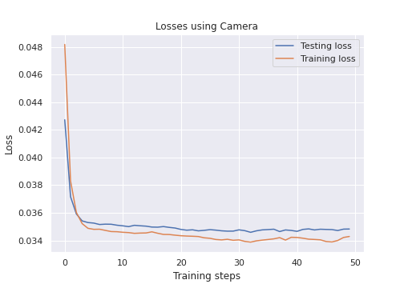

Object Avoidance and Line Following with Jackal Robot using CNN and Neural Circuit Policy
Abstract
Deep supervised modes work well when we have sufficient data to train, but one of the hardest things is to do it efficiently and hard to understand what each stage does in the learning. We always have deep neural network, high computation cost, and requirement of large amount of data when the environment is complicated. Neuron Circuit policy gives us a more intelligent way to use less data and fewer layers during the learning while finishing the task with more robustness. We design the experiment to ask Jackal robot doing autonomous navigation tasks to demonstrate using neuron circuit policy with fewer control neurons can still result in a satisfactory performance.
Project goal
We separate our tasks into two phases. Phase 1 aims for obstacle avoidance, and phase 2 aims for line following task. Both phases share the same model design that output a velocity to control the robot. We design our learning algorithm by using convolutional neural network(CNN) modules and neural circuit policy (NCP). Our system is separated into two parts: data processing and control. For more details, project report in IEEE format and trained data sets can be found in the shared google drive.

My major work
- Implement CNN and Neural Circuit Policy using tensorflow
- Take data for obstacle avoidance and line following task using ROS_Slam_tool_box and teleop separately
- Use trained model on Jackal robot with ROS and test it in reality
Demo
The videos below are Jackal robot's performance on Object avoidance and line following tasks in real environment.
Obstacle avoidance with no destination specified
Line following with specified solid and dotted lines on the ground
Training and testing results
Obstacle avoidance
For obstacle avoidance task, we trained linear and angular velocities separately paired with the same scan message data. One training model will give us predicated angular velocity using scan message and collected angular velocity as training inputs. Another training model will give us predicated linear velocity using scan message and collected linear velocity as training inputs. After having those two trained models, we constructed ROS node (load model) to publish predicated linear and angular velocity into cmd vel topic, which controls the forward speed and steering speed of Jackal. Plots below show the linear and angular velocity model result trained using laser scan messages. Both models are trained using /front/scan and /cmd vel messages recorded in rosbags.
Training results


Testing results


Line following
For Line following task, we use blue duct tape to construct an L-shaped road. Our goal is to demonstrate our trained model can follow the line from the start to the end of the road. We first manually run Jackal through the road using keyboard control. After collecting five rounds of data, we input collected RGB data and angular velocity into our training model and output predicated angular velocity. We did not collect linear velocity since we stabilize our linear velocity when manually running the Jackal. When we test our model, we use the same linear velocity. We constructed ROS nodes to publish predicated angular velocity on cmd vel topic. Pictures below show the training result of the line following model.


Future work
- Combine the line following and object avoidance into one task
- Add more moving obstacle in the training and testing environment to test the robostness of the avoidance
- Add a destination and path planning into the model